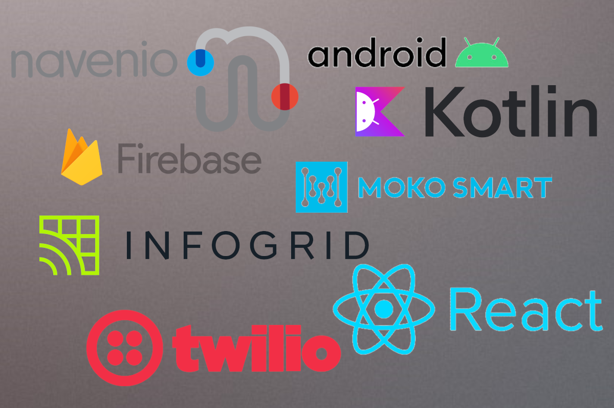

Market Research
 Following the client meeting, we wrote up requirements, which can be seen in the requirements section of the portfolio blog. In an attempt to try and refine our requirements further we conducted market research. Having set up the relevant communication channels with Apian such as Slack, WhatsApp and Email, we tried to confirm a tech stack with our client. This involved investigating the pricings, discussing budgets and caveats with different technologies and their competitors.
Knowing our client was working on a small budget, being a startup, we took a greater focus on budget options for Bluetooth tracking and communication. For instance, we asked the Computer Science help desk what BLE tracking devices they had available to help direct our choices. Furthermore, we explored funding options from UCL, discussing and writing emails to ask what UCL would be willing to fund. For example if UCL could fund a premium firebase subscription.
The potential tracking options we considered were, low power BLE beacons which many
companies sold. Options we saw included Aruba, Zebra, Moko Smart and many others.
We considered GPS, however we knew this might not be feasible for hospitals with
many floors especially in the basement for example, so it was decided that this
would be a last option. We also considered using bluetooth and GPS in combination
for more accurate tracking.
At this stage, we could already foresee problems arising. For example, a group member who
had prior experience with bluetooth suggested that bluetooth may not be extremely accurate
due signal interferences and obstacles blocking signal such as a phone case, and walls,
particularly as many doors in hospitals are thick fire doors.
We knew that we would likely have to implement a mobile app for porters and a website for
administrators in the system. From discussing with Apian we knew that this was usually
specific people who assigned tasks to porters but could also be doctors themselves.
From this we could tell that we needed to decide on a frontend framework, how to implement
the app and how to store data in the backend. Hosting would also need to be handled.
As we knew that we were using several different platforms (mobile and web) we immediately
knew that React Native was a safe bet due to its performant and cross platform nature.
Some of our members also had experience with React Native making it an excellent choice.
After discussion we felt that React native would also be a viable option for the mobile app
but soon realized the levels of permissions that would be needed would warrant an application
and a webpage would not suffice.
Our client, Apian who had experience in the area also guided us to use create an Android app.
We decided that the app would be best written in Kotlin.